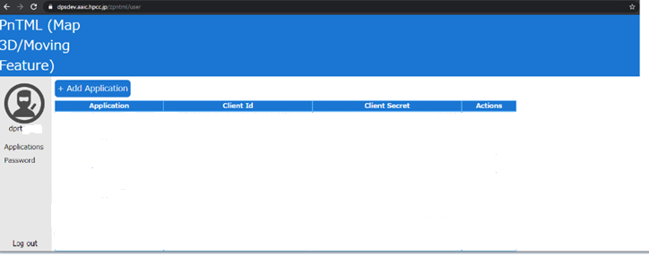
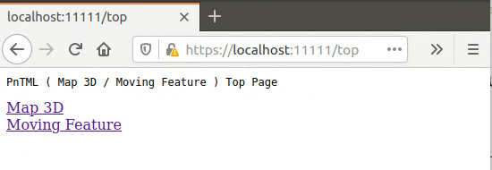
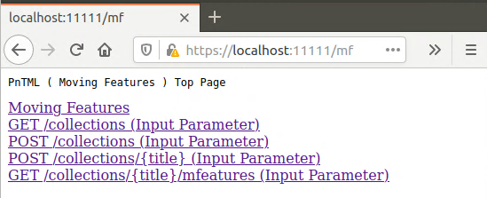
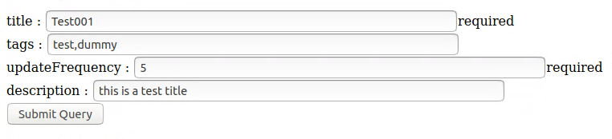
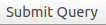

Welcome
Welcome to MovingFeatures Quickstart Introduction.
We provide two ways to access the MovingFeatures server.
This guide will help you access MovingFeatures Server with browser.
Requisites
- You have installed the JDK (at least Java8) .
- You have installed the Maven (at least Maven3.6) .
Quick Start
Access to MovingFeatures server with browser.
Examples
Access to MovingFeatures server with java or python Examples.
ClientId and ClientSecret
No matter which way you access the server, you need to get Client Id and Client Secret at first.
If you already have the Client Id and Client Secret, skip to Quick Start.
-
First, Access the following url to login server Using your user and password.
https://dps.aaic.hpcc.jp/pntml/user -
When you logged in Successfully, Add a new application(Add Application Button). 
-
Input Application Information(Using Default values as follwing).
you could input Application Name And Description with any value.Application Name Redirect(Callback) URL Homepage URL Description User01Application https://localhost:11111/callback https://localhost:11111/index Nini Description Client Id and Client Secret will be created when you clicked the save button.
Write a memo, It will be used when you access our server.
Quick Start
-
Get PnTML-Client Project.
To Connect with our team. -
Edit PnTML-Client.
-
To Edit oauth.properties with Client Id and Client Secret.
cd PnTML-Client vim src/main/resources/oauth.propertiesspring.security.oauth2.client.clientId='input your clientId' spring.security.oauth2.client.clientSecret='input your clientSecret' -
Edit application.properties.
To Edit application.properties with a key-store-password And a tomcat.basedir.
vim src/main/resources/application.propertiesserver.port=11111 server.ssl.key-store=./keystore.p12 server.ssl.key-store-password='input password' server.ssl.keyStoreType=PKCS12 server.ssl.keyAlias=tomcat server.tomcat.basedir='input tomcat log dir' -
Create keystore.p12 file.
To Create keystore.p12 file with key-store-password what you inputted above.
When you execute the following command, you Also need to input other informations except password(it can be angthing).keytool -genkey -alias tomcat -storetype PKCS12 -keyalg RSA -keysize 2048 -keystore keystore.p12 -validity 3650 -
Start PnTML-Client
To compile PnTML-Client.mvn compile mvn packageTo Start PnTML-Client Server.
java -Djava.net.preferIPv4Stack=true -jar target/pntml-client-1.0.0.jar
-
Access Server
-
To Access Pntml Server with the following URL.
-
Access MovingFeatures
When you logged in Successfully, a list of URL will be seen.

To click The Moving Feature link to access MovingFeatures Server API list.

Now, you could use MovingFeatures GET or POST methods with the follwing links.-
post a collection
To click The POST /collections(Input Parameter) link to post a collection into MovingFeatures.
It's POST /collections of MF-API.
 Fill with the following values:example
Key Example Value Required titleTest001 yes tagstest,dummy no updateFrequency5 yes descriptionthis is a test title no Submit
Click submit button. 
Results:{ "link":{ "href":"https://dpsdev.aaic.hpcc.jp/mf/collections/Test001","title":"Test001" } } -
post a movingFeature into Collection
To click The POST /collections/{title}(Input Parameter) link to post a Moving Feature into 'Test001'.
It's POST /collections/{title} of MF-API.
At First, you need to create a test.json file with the follwing:
{ "type": "Feature", "id": "example01", "properties": { "name": "car1", "state": "test1" }, "temporalGeometry": { "type": "MovingPoint", "datetimes": [ "2011-07-14T22:01:01.000Z", "2011-07-14T22:01:02.000Z" ], "coordinates": [ [ 139.757083, 35.627701, 0.5 ], [ 139.757399, 35.627701, 2 ] ], "interpolation": "Linear" }, "temporalProperties": [ { "datetimes": [ "2011-07-14T22:01:01.450Z", "2011-07-14T23:01:01.450Z" ], "length": { "type": "Measure", "form": "http://www.qudt.org/qudt/owl/1.0.0/quantity/Length", "values": [ 1, 2.4 ], "interpolation": "Linear", "description": "description1" } } ] }secondly, Fill with the following values:
example
Key Example Value Required titleTest001 yes jsonFiletest.json (selected) yes Submit
Click submit button.
Results:{ "link": [ { "href": "https://dpsdev.aaic.hpcc.jp/mf/collections/Test001/mfeatures/example01", "title": "example01" } ] } -
get collections(catalog)
To click The GET /collections(Input Parameter) link to get collections of MovingFeatures.
It's GET /collections of MF-API.
Fill with the following values:example
Key Example Value Required bbox138,35,140,36 no time2011-07-14T22:01:01.000Z,2011-07-14T22:01:02.000Z no tagdummy no Submit
Click submit button.
Results:{ "collections": [ { "id": "Test001", "itemType": "Feature", "extent": { "tags": [ "dummy", "test" ], "spatial": { "bbox": [ 139.757083, 35.627701, 139.757399, 35.627701 ] }, "temporal": { "interval": [ "2011-07-14T22:01:01.000+0000", "2011-07-14T22:01:02.000+0000" ] } }, "links": [ { "rel": "self", "href": "https://dpsdev.aaic.hpcc.jp/mf/collections/Test001" } ] } ], "links": [ { "rel": "self", "href": "https://dpsdev.aaic.hpcc.jp/mf/collections" } ] }
4. get movingFeatures of collection
To click The GET /collections/{title}/mfeatures (Input Parameter) link to get MovingFeatures of collection.
It's GET /collections/{title}/mfeatures of MF-API.
Fill with the following values:example
Key Example Value Required titleTest001 yes bbox138,35,140,36 yes time2011-07-14T22:01:01.000Z,2011-07-14T22:01:02.000Z yes formatno Submit
Click submit button.
Results:{ "timeStamp": "2020-08-26T09:22:36.036+00:00", "features": [ { "bbox": [ 139.757083, 35.627701, 0.5, 139.757399, 35.627701, 2 ], "id": "example01", "time": [ "2011-07-14T22:01:01.000+0000", "2011-07-14T22:01:02.000+0000" ], "type": "Feature", "properties": { "name": "car1", "state": "test1" } } ], "numberReturned": 1, "links": [ { "rel": "self", "href": "https://dpsdev.aaic.hpcc.jp/mf/collections/Test001/mfeatures" } ], "type": "FeatureCollection", "numberMatched": 1 }
-